A track record of successful matches.
A sample of a much broader record of successful outcomes. Members, clients and partners describe what came from Visionary's arranged meetings and introductions, across the full spectrum of matches: capital of every kind, investment opportunities, business development and key hires.
These matches grew out of the arranged meetings in our history →
Loans, investors, LPs and donors.
“Visionary sourced us a loan within days of indicating our need for working capital.”
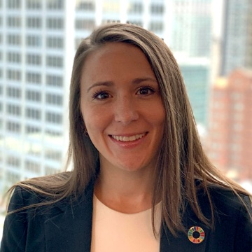
“Visionary introduced us to prospective investors in NYC, by partnering us with investor pitch events, and through private meetings in the US, remotely and internationally. We received an initial commitment from a value added investor.”

“Visionary arranged and attended multiple meetings in Boston and NYC with investors that had relevant interests and expertise in media publishing, impact, and ventures local to NYC. This resulted in investments from a publishing executive, a NYC angel group, and an intermediary that brought us an allocation from an international family office. Multiple of these investors also joined our advisory board.”

“Visionary has invited us on a regular basis to their Member gatherings, and we have used Visionary’s arranged meeting services to extend the reach of our client capital raise engagements. This has resulted in success, and we are considering recommending Visionary’s services to our clients and using them directly in future.”
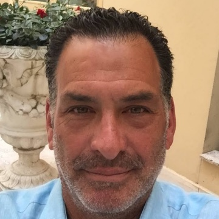
“Visionary introduced me to other private investors and family offices in Toronto in person and remotely. A Toronto local family office made an investment in one of the e-commerce ventures that my family office is backing.”
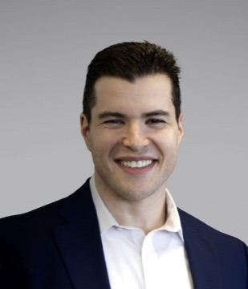
“Visionary advised on our communications, updated presentation materials, and hosted virtual events resulting in an LP investor commitment. Visionary continues to refer quality investment opportunities.”

“Visionary coordinated an international offline/online IRaaS process resulting in a LP investment.”
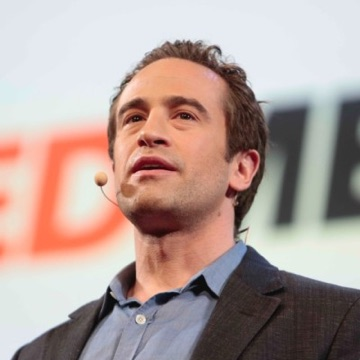
“I engaged Visionary IRaaS in the final months of the capital raise for our real estate fund. Visionary arranged local meetings, which resulted in LP commitment from a private investor.”
“Visionary made first look investor introductions quickly, resulting in an investment by a fund of funds into our cryptocurrency yield offering.”
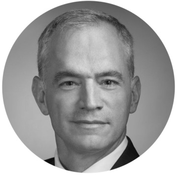
“Visionary featured our non-profit during their end of year impact arranged meetings, and at their bi-coastal holiday party in NYC and San Francisco. We were able to secure donations and make new meaningful connections.”
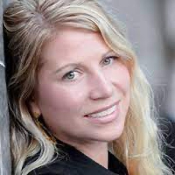
Relevant deals, matched to each investor.
“Over a multi-month process, Visionary originated a family office seeking liquidity and supported us with information coordination, resulting in a successful investment.”
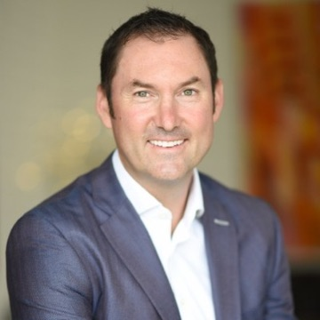
“I joined into a Visionary Virtual Event to gain industry insights and decided to make an LP investment into a leading blockchain/cryptocurrency fund.”
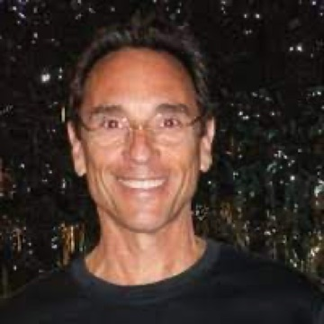
“I was referred into Visionary by my son who knew one of the Founding Members through a university. Visionary personalized their approach to me, took the time to understand my background and interests, and presented me with targeted investment opportunities. So far, I have made one investment via the Visionary Network and continue to see and consider new opportunities Visionary uncovers.”
“Visionary has presented our angel group relevant investment opportunities, and worked with our Members to involve them in their Advisory Partner expert network. A group made commitments to a children’s early learning company, and I joined their Advisory Board. Another Member of our network with expertise in the food industry secured a consulting engagement with a company in the consumer fish industry.”
“I opted into Visionary during a powered by Visionary conference. Since then, Visionary has introduced me to entrepreneurs and fund managers with relevant investment opportunities in cannabis, blockchain, and real estate. I have invested in one real estate fund.”
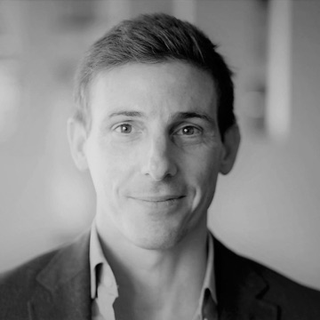
“I have known the Visionary team for some time and we continue to review the opportunities they present our fund. We have made a commitment after being presented one of these entrepreneurs.”
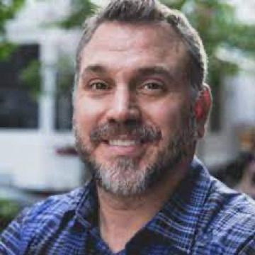
“Visionary took the time to understand my overlapping interests in real estate and early stage technology investing. They then presented me a building operations technology company and I participated in their seed round of financing.”

“Every time that Visionary presents me investment opportunities, they are relevant to my focus, high caliber, and with accomplished management teams. I have made one investment thus far and I am working with Visionary to build out that venture while reviewing other opportunities together.”

Advisory roles, clients and referrals.
“Visionary has consistently referred sports and entertainment venture advisory clients seeking coaching on their business plan and communications. Engagements with Visionary Members have taken me across the US, to Bermuda, and to Davos, Switzerland. Visionary has also supported my charitable Foundation with awareness and donations.”
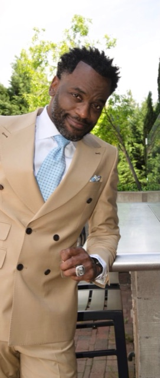
“Visionary has referred me to global opportunities relevant to my particular expertise and relationships in gaming, media, and philanthropy, resulting in Advisory Board roles.”
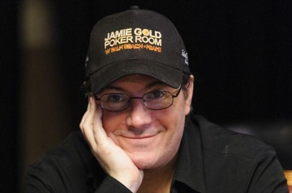
“I have engaged Visionary for Relationship Capital Management using Access Credits to map my relationships and activate them via Virtual Events. One of my referrals resulted in fund LP placement. I have staked Access Credits as a Founding Member and to deepen this arrangement.”
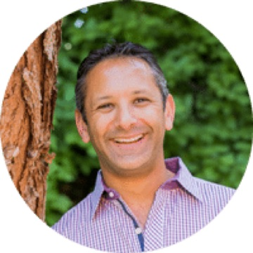
Leadership roles, found through the network.
“Visionary engaged me for consulting services and during that time I worked with various Members in the network, including a private equity fund, which then hired me full time as their COO.”

This is a sampling of successful matches, not a complete list. Testimonials reflect each person's own experience with Visionary. They are not a guarantee of any future introduction, investment or outcome.
Where these matches came from.
Arranged meetings, hundreds of gatherings and the Access Credits model, stage by stage.
Open the scrapbook →Find your next match.
Share your focus and the team will be in touch to schedule a welcoming meeting.
Take the Access Survey →